I design product systems that absorb business rules and market-specific regulatory variation — without losing consistency. I work with a workflow powered by Figma MCP and Claude.
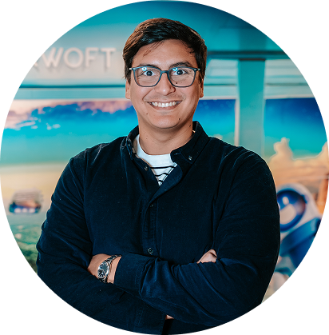
I started my career in Branding as a Graphic Designer and later specialized in UX/UI. Today, as a Product Designer at Darwoft, I focus on solving problems in complex, regulated systems for the healthcare sector. I bring a holistic vision to every team: keeping the brand's visual consistency while building the logic and structure that make the product work.
How we optimized medical transport traceability to improve Moovear's profitability and service.
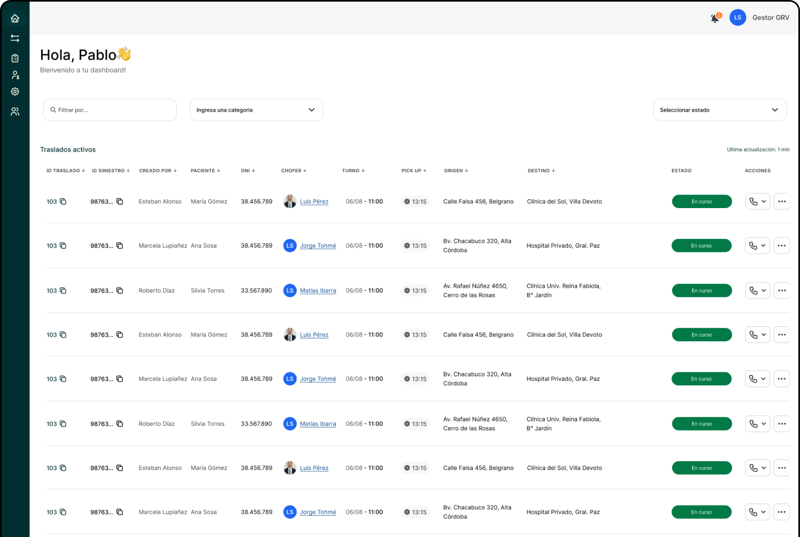
It's a platform and mobile app for the Argentine market, designed for the end-to-end management of patient medical transport within the Occupational Risk Insurance (ART) system.
We built a complex product that adapted to the business's specific needs, drawing on patterns users already recognized (like Cabify or Uber) while tailoring them to each particular need. Every transport is now audited, making trips traceable and optimizing time and resources. The product is currently expanding.
1.1 Trip traceability for the driver.
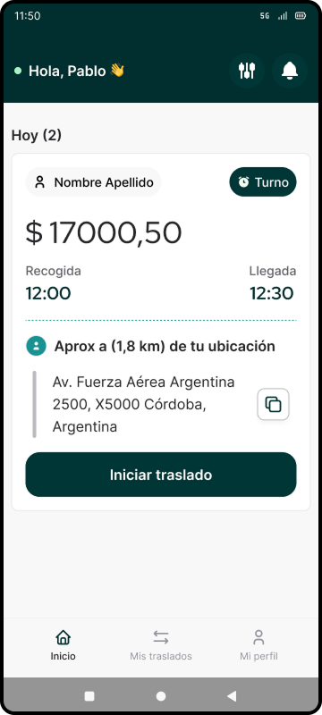
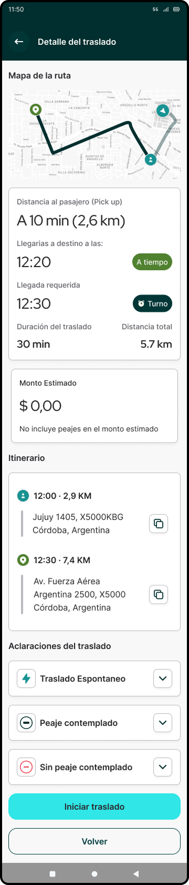
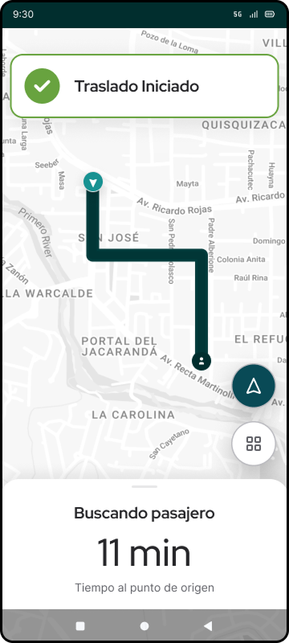
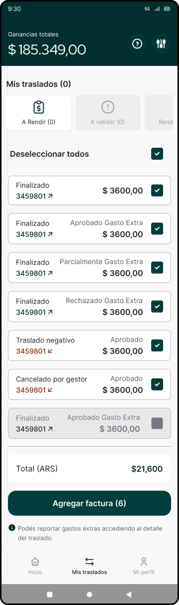
700
Trips per day that became audited
19600
Trips per month that are traceable
From a lookup app to a self-service platform for workplace accidents
2.1 Home redesigns and dark mode
Home Screen
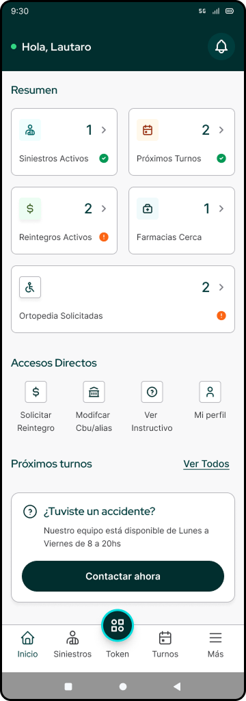
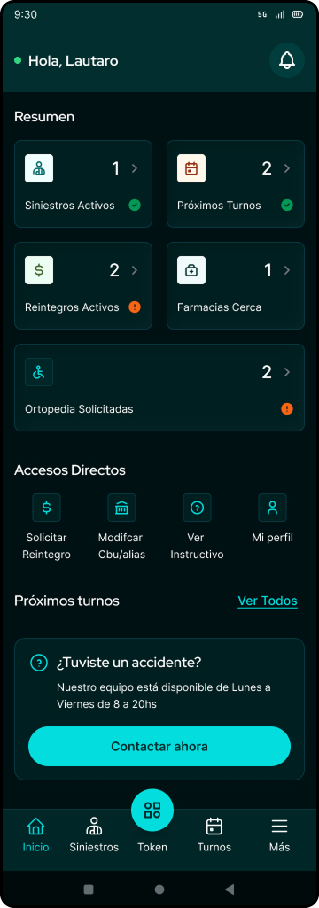
Detail
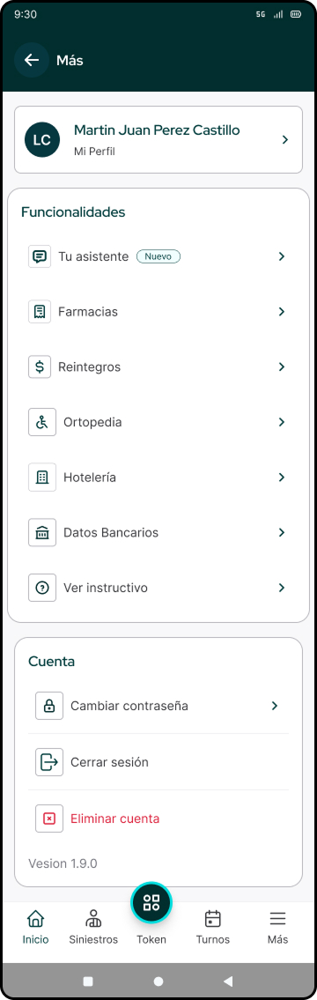
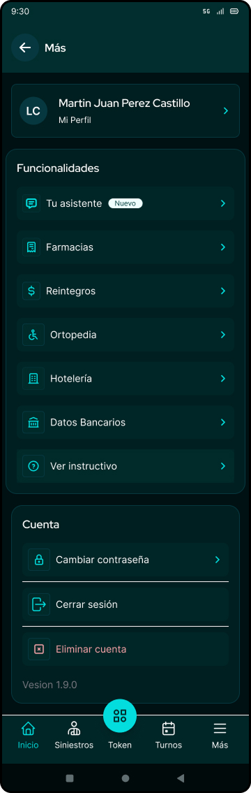
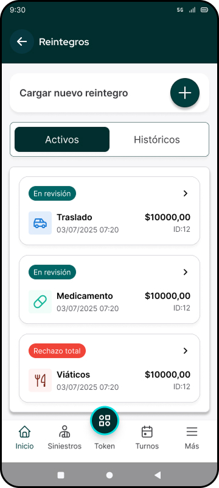
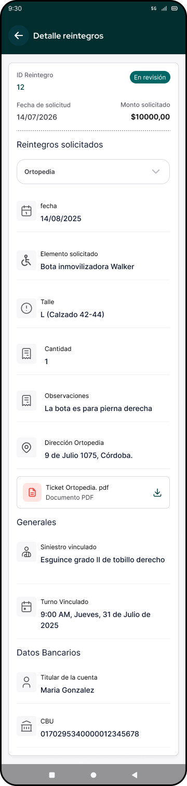
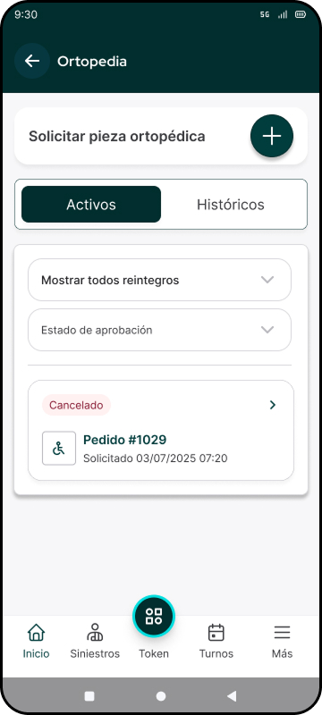
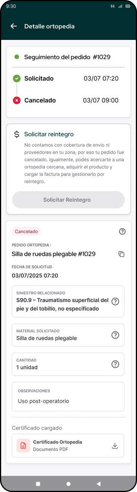
It's a mobile app for the Argentine market that allows tracking and managing one or more workplace accidents for an employee covered by an ART.
It started as an app whose only purpose was letting the employee check the status of a workplace claim. Features were gradually added and proposed, backed by strong benchmarking against similar healthcare products (like health-insurance apps), giving employees more self-service functions — reducing manual workload for case managers and making complex paperwork simple and traceable.
183
active users since going live
120
New users in the last month
How we turned a telemedicine app into a complex HRMS.
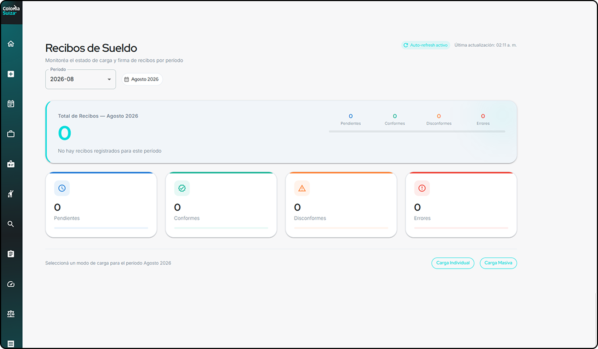
3.1 Core function: requesting workplace leave
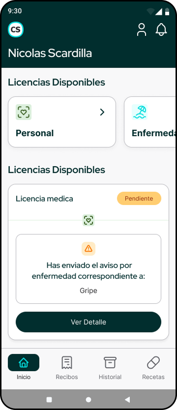
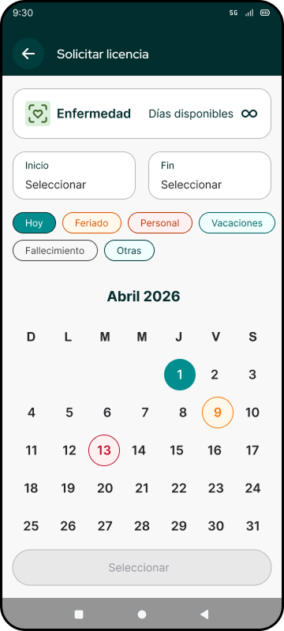
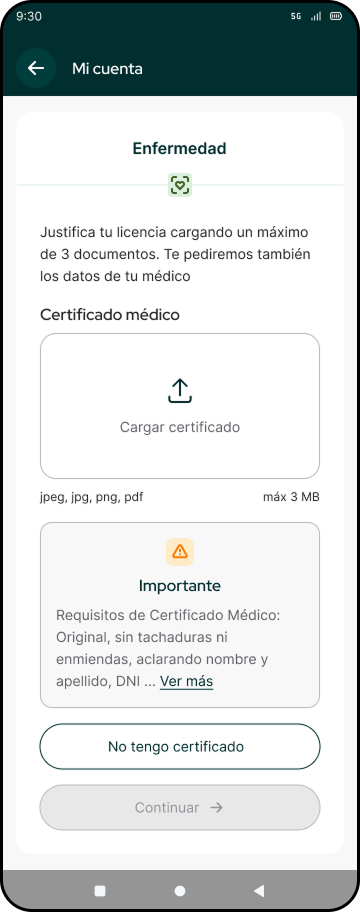
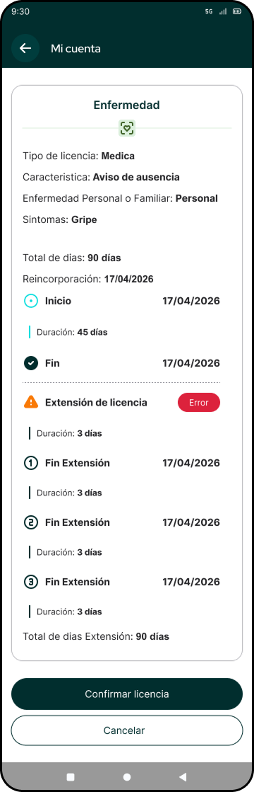
MedLab is an end-to-end labor and medical management platform that connects employees and employers in one place. Through the app, workers can report absences, request leave and vacation with real-time tracking, access prescriptions and medical records, and manage payslips through viewing, signing, and downloading. It also keeps personnel files up to date and sends automatic notifications on the status of requests or appointments.
Just like with SAS Mobile, MedLab started as an app whose only function was requesting and tracking medical and personal leave, paired with a platform where employers could view them. Improvements were gradually integrated, turning it into a human resources management platform, and the app into a personal-management tool that goes beyond simply requesting leave.
The system is built in a tokenized way, across two layers: primitives (color, spacing, and typography in their raw form, with no semantic meaning) and semantic tokens (which inherit from primitives and convey intent, e.g. color/status/approved or color/status/rejected). This structure keeps visual consistency across SAS Mobile, MedLab, and Traslada, and lets the system scale to new markets and brands without rewriting styles from scratch.
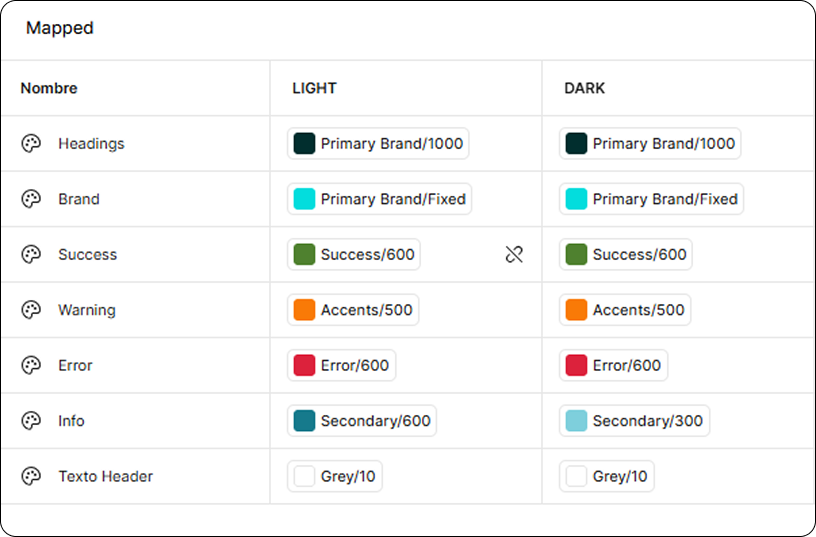
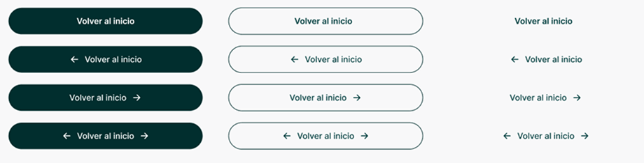
A real component pulled from the MedLab design system (shared across SAS Mobile, MedLab and Traslada) — its states are driven entirely by primitive and semantic tokens. Toggle to see the theme layer swap live.